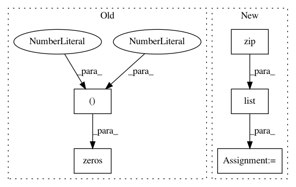

6c8d301d19b62d966148a3a1409e05ba84d5ea50,ggplot/geoms/geom_segment.py,geom_segment,draw,#Any#Any#Any#Any#,23
Before Change
def draw(pinfo, scales, coordinates, ax, **kwargs):
pinfo["edgecolor"] = make_color_tuples(pinfo["edgecolor"],
pinfo["alpha"])
segments = np.zeros((len(pinfo["x"]), 2, 2))
segments[:, 0, 0] = pinfo["x"]
segments[:, 0, 1] = pinfo["y"]
segments[:, 1, 0] = pinfo["xend"]
segments[:, 1, 1] = pinfo["yend"]
After Change
pinfo["edgecolor"] = make_rgba(pinfo["edgecolor"],
pinfo["alpha"])
x = list(chain(*zip(pinfo["x"], pinfo["xend"])))
y = list(chain(*zip(pinfo["y"], pinfo["yend"])))
segments = make_line_segments(x, y, ispath=False)
coll = mcoll.LineCollection(segments,
edgecolor=pinfo["edgecolor"],
linewidth=pinfo["linewidth"],
linestyle=pinfo["linestyle"],
In pattern: SUPERPATTERN
Frequency: 3
Non-data size: 5
Instances
Project Name: has2k1/plotnine
Commit Name: 6c8d301d19b62d966148a3a1409e05ba84d5ea50
Time: 2015-06-02
Author: has2k1@gmail.com
File Name: ggplot/geoms/geom_segment.py
Class Name: geom_segment
Method Name: draw
Project Name: deepfakes/faceswap
Commit Name: 0e0b2faa1a205fe276a7c53bc600fca60b239234
Time: 2019-10-28
Author: vrooman.kyle@gmail.com
File Name: tools/sort.py
Class Name: Sort
Method Name: sort_face_cnn
Project Name: deepfakes/faceswap
Commit Name: 0e0b2faa1a205fe276a7c53bc600fca60b239234
Time: 2019-10-28
Author: vrooman.kyle@gmail.com
File Name: tools/sort.py
Class Name: Sort
Method Name: sort_face_cnn_dissim